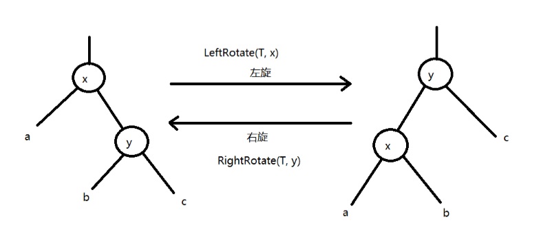
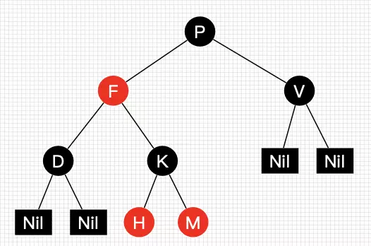
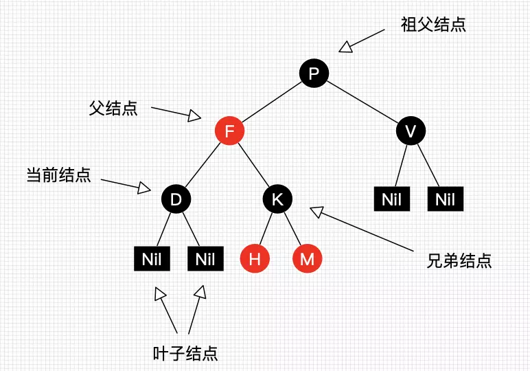
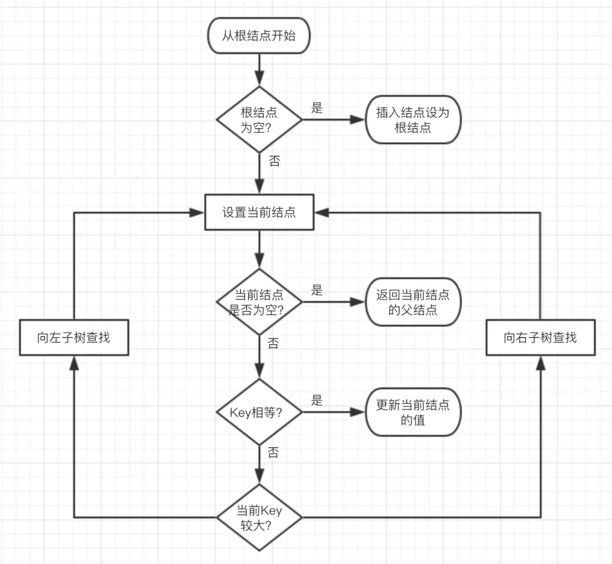
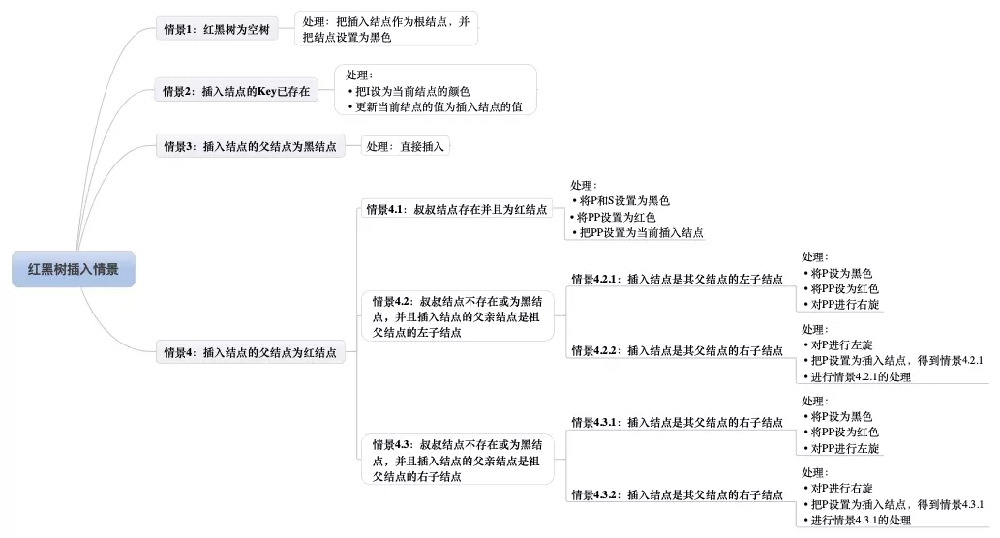
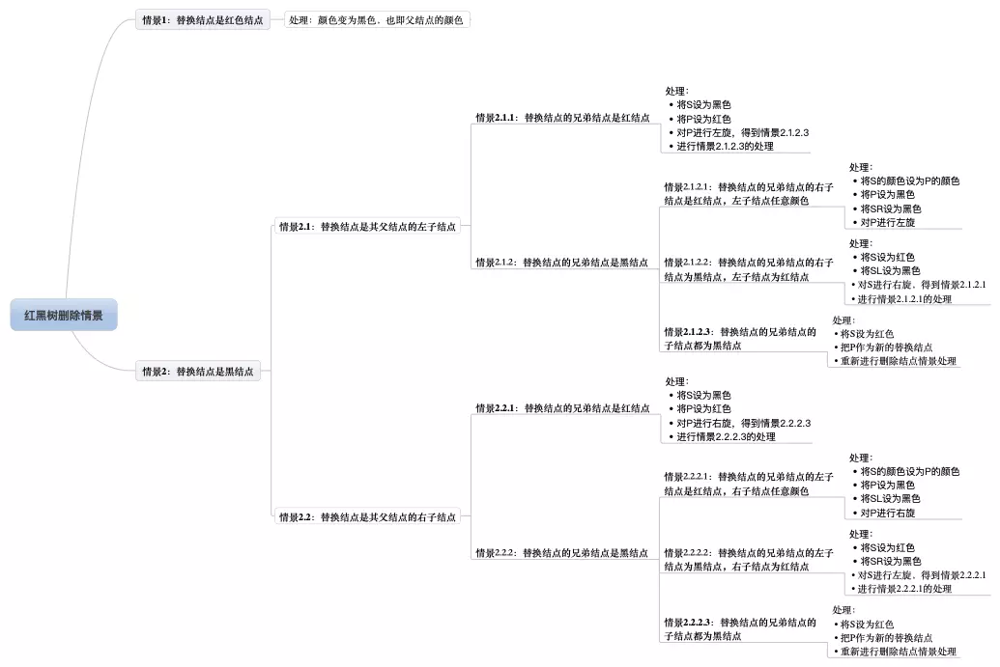

树有很多种，二叉树，多叉树(B-树，B+树)等，本文主要针对几种较为常用的树，做精要记录，梳理逻辑便于长时间之后的理解与记忆。
二叉树
在计算机科学中，二叉树是每个结点最多有两个子树的树结构。通常子树被称作“左子树”（left subtree）和“右子树”（right subtree）。二叉树常被用于实现二叉查找树和二叉堆。
二叉树特点
由二叉树的定义，以及图中所示的二叉树的分析可以得出二叉树具有以下几个特点：
- 每个结点最多有两颗子树，所以二叉树中不存在度大于2的结点。
- 左子树和右子树是有顺序的，次序不能任意颠倒。
- 即使树中某结点只有一棵子树，也要区分它是左子树还是右子树。
二叉树存储方式
除数据域外，主要区别体现形式是左右子树的表示不同
- 链式存储
用数组表示二叉树，左右子树用数组下标表示
- 优点：查找速度更快
- 缺点：不为
满二叉树时，浪费了空间，扩展性差或者说插入新数据慢。
- 链表存储
用链表表示二叉树，左右子树用结点指针表示
- 优点：无空间浪费，扩展性好，插入数据快。
- 缺点：查找速度略慢。
满二叉树
记住一句话即可。
所有叶子结点都在最下层
完全二叉树
对一颗具有n个结点的二叉树按层编号，如果编号为i(1<=i<=n)的结点与同样深度的 满二叉树 中编号为i的结点在二叉树中位置完全相同，则这棵二叉树称为完全二叉树。
所有叶子结点都在最下层与次下层
平衡二叉树
左右子树的高度相差不超过1的树为平衡二叉树，也叫AVL树。
注意点：实现了树的自平衡以提升树的查找效率
如何做到自平衡的：

- 左旋
1.结点的右孩子替代此结点位置
2.右孩子的左子树变为该结点的右子树
3.结点本身变为右孩子的左子树
- 右旋
1.结点的左孩子代表此结点
2.结点的左孩子的右子树变为结点的左子树
3.将此结点作为左孩子结点的右子树
1
2
3
4
5
6
7
8
9
10
11
12
13
14
15
16
17
18
19
20
21
22
23
24
25
26
27
28
29
30
31
32
33
34
35
36
37
38
39
40
41
42
43
44
45
|
void rbtree_left_rotate(rbtree *T, rbtree_node *x) {
rbtree_node *y = x->right;
x->right = y->left;
if (y->left != T->nil) {
y->left->parent = x;
}
y->parent = x->parent;
if (x->parent == T->nil) {
T->root = y;
} else if (x == x->parent->left) {
x->parent->left = y;
} else {
x->parent->right = y;
}
y->left = x;
x->parent = y;
}
void rbtree_right_rotate(rbtree *T, rbtree_node *y) {
rbtree_node *x = y->left;
y->left = x->right;
if (x->right != T->nil) {
x->right->parent = y;
}
x->parent = y->parent;
if (y->parent == T->nil) {
T->root = x;
} else if (y == y->parent->right) {
y->parent->right = x;
} else {
y->parent->left = x;
}
x->right = y;
y->parent = x;
}
|
红黑树
红黑树是一种非常重要且应用广泛的数据结构。它是在AVL树的基础上加以改进优化得出的一个高效算法。它虽然是复杂的，但它的最坏情况运行时间也是非常良好的，并且在实践中是高效的：它可以在O(log n)时间内做查找，插入和删除。定义
红黑树是每个结点都带有颜色属性的二叉查找树，颜色或红色或黑色。应用举例
- Linux进程调度CFS
- Nginx Timer事件管理
- Epoll事件块的管理
- STL中set, multiset, map, multimap的实现
性质
- 结点是红色或黑色
- 根结点是黑色
- 每个叶子结点(nil)是黑色
- 每个红色结点的两个子结点都是黑色(从每个叶子到根的所有路径上不能有两个连续的红色结点)
- 从任一结点到其每个叶子的所有路径都包含相同数目的黑色结点
从性质5可以知道：如果一个结点存在黑子结点，那么该结点肯定有两个子结点
下图Nil为叶子结点，并且它的颜色一定是黑色的。

由图可见，红黑树并不是一个完美平衡二叉查找树,根结点P的左子树显然比右子树高，但左子树和右子树的黑结点的层数是相等的，也即任意一个结点到到每个叶子结点的路径都包含数量相同的黑结点(性质5)。所以我们叫红黑树这种平衡为黑高平衡。
为了后面讲解不至于混淆，我们还需要来约定下红黑树一些结点的叫法，如下图

红黑树插入
插入操作包括两部分工作：一查找插入的位置；二插入后自平衡。从根结点开始查找；
若根结点为空，那么插入结点作为根结点，结束。
若根结点不为空，那么把根结点作为当前结点；
若当前结点为null，返回当前结点的父结点，结束。
若当前结点key等于查找key，那么该key所在结点就是插入结点，更新结点的值，结束。
若当前结点key大于查找key，把当前结点的左子结点设置为当前结点，重复步骤4；
若当前结点key小于查找key，把当前结点的右子结点设置为当前结点，重复步骤4；

插入完成后，但插入结点是应该设置成什么颜色呢？
答案是红色。因为红色在父结点（如果存在）为黑色结点时，红黑树的黑色平衡没被破坏，不需要做自平衡操作。但如果插入结点是黑色，那么插入位置所在的子树黑色结点总是多1，必须做自平衡。

红黑树删除
红黑树插入已经够复杂了，但删除更复杂，也是红黑树最复杂的操作了。
红黑树的删除操作也包括两部分工作：一查找目标结点；而删除后自平衡，最后调色。
二叉树删除结点找替代结点有3种情情景：
情景1：若删除结点无子结点，直接删除
情景2：若删除结点只有一个子结点，用子结点替换删除结点
情景3：若删除结点有两个子结点，用后继结点（大于删除结点的最小结点）替换删除结点
同样的，我们也是先来总体看下删除操作的所有情景，如图所示。

红黑树插入删除代码：
1
2
3
4
5
6
7
8
9
10
11
12
13
14
15
16
17
18
19
20
21
22
23
24
25
26
27
28
29
30
31
32
33
34
35
36
37
38
39
40
41
42
43
44
45
46
47
48
49
50
51
52
53
54
55
56
57
58
59
60
61
62
63
64
65
66
67
68
69
70
71
72
73
74
75
76
77
78
79
80
81
82
83
84
85
86
87
88
89
90
91
92
93
94
95
96
97
98
99
100
101
102
103
104
105
106
107
108
109
110
111
112
113
114
115
116
117
118
119
120
121
122
123
124
125
126
127
128
129
130
131
132
133
134
135
136
137
138
139
140
141
142
143
144
145
146
147
148
149
150
151
152
153
154
155
156
157
158
159
160
161
162
163
164
165
166
167
168
169
170
171
172
173
174
175
176
177
178
179
180
181
182
183
184
185
186
187
188
|
void rbtree_insert_fixup(rbtree *T, rbtree_node *z) {
while (z->parent->color == RED) {
if (z->parent == z->parent->parent->left) {
rbtree_node *y = z->parent->parent->right;
if (y->color == RED) {
z->parent->color = BLACK;
y->color = BLACK;
z->parent->parent->color = RED;
z = z->parent->parent;
} else {
if (z == z->parent->right) {
z = z->parent;
rbtree_left_rotate(T, z);
}
z->parent->color = BLACK;
z->parent->parent->color = RED;
rbtree_right_rotate(T, z->parent->parent);
}
}else {
rbtree_node *y = z->parent->parent->left;
if (y->color == RED) {
z->parent->color = BLACK;
y->color = BLACK;
z->parent->parent->color = RED;
z = z->parent->parent;
} else {
if (z == z->parent->left) {
z = z->parent;
rbtree_right_rotate(T, z);
}
z->parent->color = BLACK;
z->parent->parent->color = RED;
rbtree_left_rotate(T, z->parent->parent);
}
}
}
T->root->color = BLACK;
}
void rbtree_insert(rbtree *T, rbtree_node *z) {
rbtree_node *y = T->nil;
rbtree_node *x = T->root;
while (x != T->nil) {
y = x;
if (z->key < x->key) {
x = x->left;
} else if (z->key > x->key) {
x = x->right;
} else {
return ;
}
}
z->parent = y;
if (y == T->nil) {
T->root = z;
} else if (z->key < y->key) {
y->left = z;
} else {
y->right = z;
}
z->left = T->nil;
z->right = T->nil;
z->color = RED;
rbtree_insert_fixup(T, z);
}
void rbtree_delete_fixup(rbtree *T, rbtree_node *x) {
while ((x != T->root) && (x->color == BLACK)) {
if (x == x->parent->left) {
rbtree_node *w= x->parent->right;
if (w->color == RED) {
w->color = BLACK;
x->parent->color = RED;
rbtree_left_rotate(T, x->parent);
w = x->parent->right;
}
if ((w->left->color == BLACK) && (w->right->color == BLACK)) {
w->color = RED;
x = x->parent;
} else {
if (w->right->color == BLACK) {
w->left->color = BLACK;
w->color = RED;
rbtree_right_rotate(T, w);
w = x->parent->right;
}
w->color = x->parent->color;
x->parent->color = BLACK;
w->right->color = BLACK;
rbtree_left_rotate(T, x->parent);
x = T->root;
}
} else {
rbtree_node *w = x->parent->left;
if (w->color == RED) {
w->color = BLACK;
x->parent->color = RED;
rbtree_right_rotate(T, x->parent);
w = x->parent->left;
}
if ((w->left->color == BLACK) && (w->right->color == BLACK)) {
w->color = RED;
x = x->parent;
} else {
if (w->left->color == BLACK) {
w->right->color = BLACK;
w->color = RED;
rbtree_left_rotate(T, w);
w = x->parent->left;
}
w->color = x->parent->color;
x->parent->color = BLACK;
w->left->color = BLACK;
rbtree_right_rotate(T, x->parent);
x = T->root;
}
}
}
x->color = BLACK;
}
rbtree_node *rbtree_delete(rbtree *T, rbtree_node *z) {
rbtree_node *y = T->nil;
rbtree_node *x = T->nil;
if ((z->left == T->nil) || (z->right == T->nil)) {
y = z;
} else {
y = rbtree_successor(T, z);
}
if (y->left != T->nil) {
x = y->left;
} else if (y->right != T->nil) {
x = y->right;
}
x->parent = y->parent;
if (y->parent == T->nil) {
T->root = x;
} else if (y == y->parent->left) {
y->parent->left = x;
} else {
y->parent->right = x;
}
if (y != z) {
z->key = y->key;
z->value = y->value;
}
if (y->color == BLACK) {
rbtree_delete_fixup(T, x);
}
return y;
}
|
我们需要知道的是红黑树也许不是最优解但是绝对是一个较优解
红黑树有着目前算法中内存读写综合性能最好的数据结构代码要求：不要求能盲打，但是最好能对照定义敲出。另外红黑树的算法论证见算法导论。
- 查询速度仅次于hash，但是比hash省空间，几乎等于AVL树
- 搜索稳定性能最佳，算法耗时稳定
O(long n)（不会出现最长搜索时间，最短搜索时间）
- 伸缩性好，写操作也能很快
- 红黑树的查询性能略微逊色于AVL树，因为他比avl树会稍微不平衡最多一层，也就是说红黑树的查询性能只比相同内容的avl树最多多一次比较
- 红黑树在插入和删除上优于avl树，avl树每次插入删除会进行大量的平衡度计算，而红黑树为了维持红黑性质所做的红黑变换和旋转的开销，相较于avl树为了维持平衡的开销要小得多
注释
红黑树图片引用原文链接